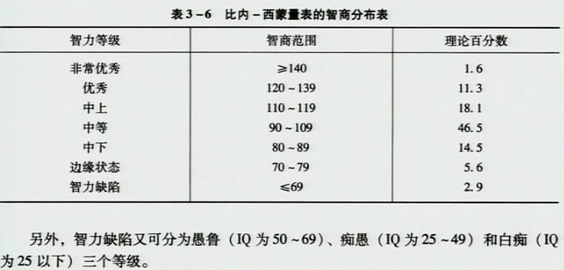

00:00
第三章 心理测验技能（三级）
第二单元 联合型瑞文测验（CRT）
一、学习目标
掌握CRT的实施、记分及结果解释方法。
二、工作程序
（一）.测验的实施：
1.CRT是标准型与彩色型联合而成。
2. 六个单元，每单元12题。
3. 前三单元为彩色图案，后三单元为黑白图案。
（二）.适用范围：
（1）5至75岁以内的幼儿、儿童成年、老年皆可借此测验粗评智力等级。幼儿以及智力低下者和不能自行书写的老年人宜个别施测，一般可团体进行。
（2）此测验可用于有言语障碍的智力测验，可用于不同文化程度、不同语言、不同种族以及文盲、智残、聋哑人；
（3）施测时，每个被试发一本题册和一张大卷纸。
02:31
（三）.具体要求：
1.正常三年级以上的儿童与65以下的成人以团体施测，其他则以个别施测；
2.示范测试方法，示范两题
3.时限：40分钟。20分钟及30分钟各报一次时间；
4.幼儿及弱智者在个别施测时，A、Ab、B 系列全部完成，C、D、E 三单元如连续 3 题不通过，则该单元不再往下测。未测项目按不通过计，但A、Ab、B三单元不管做对多少都必须做完。
（四）.测验的记分：
1.原始分： 1、0 二级评分，计算原始分数
2.量表分： 将原始分转换成相应的百分等级，然后再转换为（IQ）分数。
（五）.结果的解释：
11:45
三、相关知识
1. 英国心理学家瑞文（J.C.Raven）于1938年设计的一种非文字智力测验；
2.联合型瑞文测验（城市儿童、农村儿童、成人常模），李丹、王栋等，1989年；
3.以智力的二因素理论为基础，主要测量了一般因素（G因素）中的推断性能力（eductive ability);
4.英文原版的瑞文测验共包括：标准型、彩色型、高级型；
5.标准型（SPM）测验中国城市修订版，张厚粲，1986年，适用于6岁到成人的被试，它有5个黑白系列，共计60个项目；
6.彩色型适用于儿童及智力落后的成人，分三个系列；
7.瑞文高级推理能力测验修订版，难度大。
8.理论基础：J.C.Raven曾同C.Spearman工作，受其影响。
四、注意事项
1.主试逐字照读指导语，对被试提问可以重复指导语，不应擅自补充或修改。
2.团体施测时特别要防止相互抄袭或交谈，有条件的地方最好座位分开。
3.团体施测对象如超过30人，除主试外应增加主试助理1～2人，每次施测团体应不超过50人。
4.主试和主试助理在被试进行前5题时，应进行巡视，对不能理解解题方式或前5题不能正确回答者，单独重复指导语。
16:28
第三单元 中国比内测验
一、学习目标
掌握中国比内测验的实施、记分及结果解释方法。
二、工作程序
（一）.测验的实施：
1.吴天敏教授1982年完成的中文版第三次修订本，51个试题。
2.为了节省时间，还制订了一份《中国比内测验简编》
3.适用范围：2～18岁，农村城市共用一套试题。
（二）.施测步骤：
1.让被试或替被试填明记录纸上的简历，并签上自己的姓名。
2.施测时，先根据被试者的年龄从测验指导书的附表中查到开始的试题，然后按指导书的实施方法进行测验。
3.对照记录纸，逐题熟读指导语，要求能在指导被试做每个试题时，自然而准确地说出。
4.被试者连续有5个题不通过时，停止测验。
（三）.测验的记分：
1.通过1题记1分。
2.
总分为通过的分数加上补加分数。
3.
根据被试的实足年龄和总分，从指导书的智商表中即可查到相应的智商。
21:15
（四）.结果的解释：离差智商，但平均数100，标准差16。智商分布表

23:08
三、相关知识
（一）.比内-西蒙量表的发展
1.1905年 编制而成，30个项目。
2.1908年 比内-西蒙量表，增加了一些新的测验项目，使总数达到59个，将测验成绩用“智力年龄”表示，并建立了常模。
3.1911年 第三次修订 成人组
4.1916年 推孟教授修订 首次引入比率智商的概念IQ，3-13岁
5.1937年 第一次对斯坦福-比内量表修订，有L和M型两个等值量表构成，2-18岁
6.1960年 推孟和梅里尔将1937年量表中的最佳项目合并成单一的量表，L-M型，样本的代表性更广泛，重大的改革是采用了韦氏量表的离差智商。
7.1985年 桑代克、哈根、沙特勒等，斯坦福-比内量表第四版
8.1924年 陆志伟先生根据1916年版本修订了《中国比内-西蒙智力测验》，适合江浙儿童。
9.1936年 陆志伟、吴天敏、第二次修订，使用范围扩大到北方，6-14岁。
10.1982年 吴天敏第三版《中国比内测验》，扩大到2-18岁，放弃了比率智商，采用离差智商的计算方法求IQ。
11.《中国比内测验简编》（简称简编）：由8个项目组成。
26:34
（二）.中国比内测验的内容
中国比内测验 |
| 1.比圆形 |
18.找寻数目 |
35.方形分析（二） |
| 2.说出物名 |
19.找寻图样 |
36.记故事 |
| 3.比长短线 |
20.对比 |
37.说出共同点 |
| 4.拼长方形 |
21.造语句 |
38.语句重组（一） |
| 5.辨别图形 |
22.正确答案 |
39.倒背数目 |
| 6.数纽扣13个 |
23.对答问句 |
40.说反义词（二） |
| 7.问手指数 |
24.描画图样 |
41.拼字 |
| 8.上午和下午 |
25.剪纸 |
42.评判语句 |
| 9.简单迷津 |
26.指出谬误 |
43.数立方体 |
| 10.解说图画 |
27.数学技巧 |
44.几何形分析 |
| 11.找寻失物 |
28.方形分析 |
45.说明含义 |
| 12.倒数20至1 |
29.心算（三） |
46.填数 |
| 13.心算（一） |
30.迷津 |
47.语句重组（二） |
| 14.说反义词 |
31.时间计算 |
48.校正错误 |
| 15.推断情景 |
32.填字 |
49.解释成语 |
| 16.指出缺点 |
33.盒子计算 |
50.明确对比关系 |
| 17.心算（二） |
34.对比关系 |
51.区别词义 |
38:29
四、注意事项
1.主试对被试必须保持一般的和善态度，对于被试的有关试题内容的探索性问题，一概支吾过去，比如对他说：“你自己想一想”。
2.施测时主试与被试对坐，主试可将指导书立在面前，以免被试者窥视主试的记录，思想受到扰乱。
3.主试必须按照各题的时限控制时间，不可随意延长或缩短。
4.尽量记录被试的原话，以便核查，测验中，凡属闲话，一概不说。